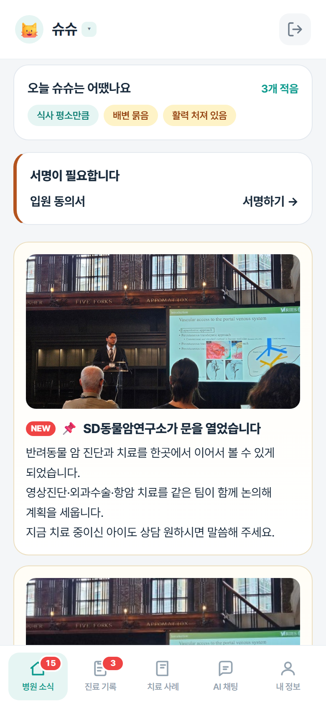
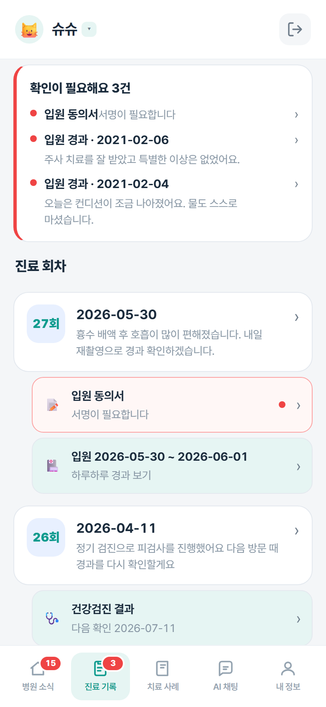
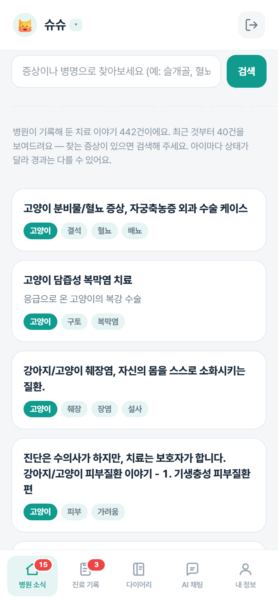
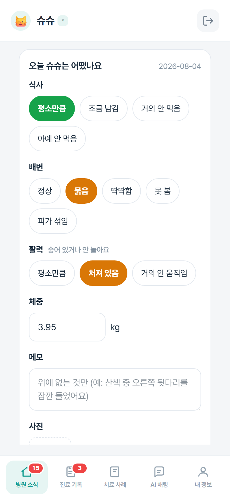
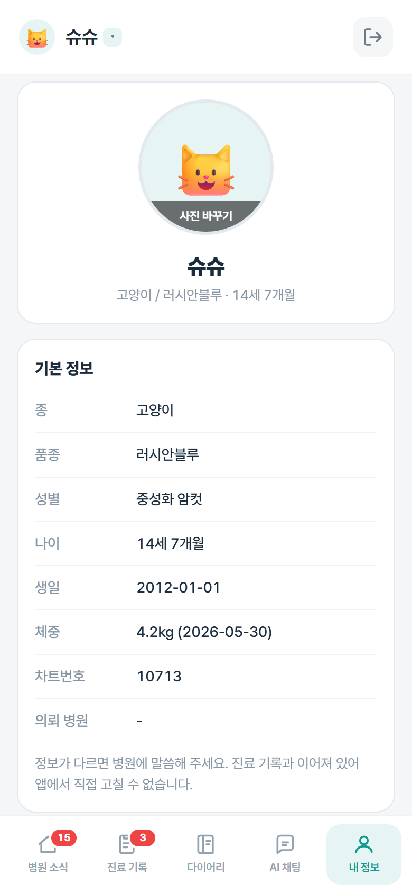
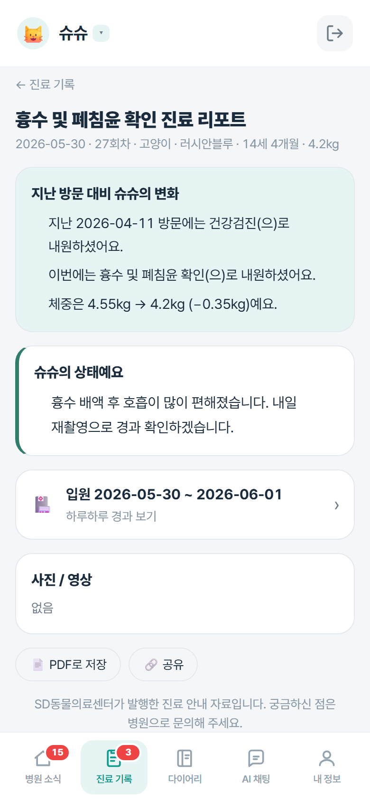
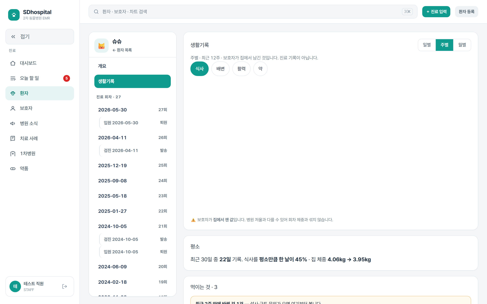

EMR · PACS · 보호자 앱 세 가지. 앞의 둘은 이미 있는 것과 같고,
승부는 보호자 앱에서 납니다.
지금 의뢰는 왕십리 반경 · 목표는 서울 전역 · 경기 · 인천
2026-08-04대표원장님 보고용
Ⅰ. 현황
우리 매출은 1차 병원의 의뢰에 달려 있습니다
·수술·정밀검사는 빈도가 낮고 단가가 높습니다.
·거리 저항이 낮아 지방에서도 옵니다.
·다만 유입은 전부 1차 병원 의뢰에서 옵니다.
지금 의뢰해 주시는 병원은 왕십리 반경 안에 몰려 있습니다 —
원장님이 직접 아시는 곳들입니다. 거리가 막은 게 아니라 접점이 없었습니다.
그래서 질문은 하나입니다 — 친분 없는 병원을 어떻게 데려올 것인가.
Ⅰ. 현황 — 이 기획의 축
1차 원장님을 움직이는 건 보호자입니다
원장님이 직접 찾아가는 방법은 왕십리 안에서만 됩니다.
이 고리는 거리를 타지 않습니다.
Ⅱ. 무엇을 만드나
세 가지를 만들어 하나의 클라우드로 잇습니다
①②는 이미 있는 것과 같습니다(다음 장에서 짧게).
③ 보호자 앱이 우리가 만드는 것이고, 이 보고의 나머지는 전부 그 이야기입니다.
Ⅱ. 무엇을 만드나 — ①②
EMR 과 PACS 는 이미 있는 것과 같습니다
① EMR
접수 · 차트 · 처방 · 입원 · 검진. 기술적으로 어려운 영역이 아닙니다 —
사람 병원과 달리 보험 청구가 없어 접수·수납·차트가 전부입니다.
SD 본원용은 이미 만들어 동작 중이고, SD 는 기존에 쓰시던 시스템을 계속 쓰셔도 됩니다.
우리 것은 보호자·1차 병원에게 보여줄 것을 담는 그릇입니다.
② PACS
X-ray · CT · MRI 를 저장하고 웹에서 봅니다. 표준(DICOM)이라 장비 제조사를 안 가립니다.
지금은 SD 영상을 이미지 업로드로 공유하고 있고,
본격 PACS 는 1차 병원 보급 단계에서 만듭니다 — 그때 이게 영업의 창끝이 됩니다.
여기에 힘을 더 쓰지 않는 이유 — 기능을 더 넣어도 보호자는 모릅니다.
그리고 1차 원장님을 움직이는 건 EMR 성능이 아니라 자기 보호자의 반응입니다(앞 장).
그래서 개발 리소스는 보호자 앱에 몰아줍니다.
Ⅲ. 보호자 앱
③ 보호자 앱 — 실제로 만든 화면입니다
탭 다섯 개가 전부입니다. 아래는 데모 데이터가 들어간 실제 앱 화면입니다.

병원 소식 첫 화면

진료 기록 회차·입원·검진·동의서

치료 사례 442건 검색

생활기록 평소를 남긴다

내 정보 알림 · 프로필
다음 장부터 보호자가 실제로 원하는 것 순서로 하나씩 보시겠습니다.
Ⅲ. 보호자 앱 — 니즈 ①
“오늘 우리 아이가 무슨 진료를 받았나”

1모든 진료마다 나갑니다. 진료 회차는 어떤 환자에게든 반드시 생기므로,
앱이 말을 걸 기회가 방문할 때마다 생깁니다.
2“지난 방문 대비 변화”는 시스템이 계산합니다 —
직전 회차의 주 증상과 체중 증감. 수의사가 넣는 건 주 증상 한 줄과 코멘트뿐(30초).
3입원했으면 그 아래에 붙습니다. “그게 어느 진료였더라”를 되짚지 않아도 됩니다.
⚠️ 진료 원문과 처방 상세는 넣지 않습니다. 의료진 축약어와 감별진단이 섞여 있어
보호자가 검색해 보고 불안해하거나 확정 진단으로 오해합니다. 분쟁의 소지이기도 합니다.
보내기 전 보호자가 볼 화면 그대로 미리보기가 뜹니다 — 미리보기가 곧 실제 발송물입니다.
Ⅲ. 보호자 앱 — 니즈 ②
“입원시켜 놓고 하루 종일 궁금합니다”
입원 일일 리포트 — 매일 한 번
오늘 사진 · 밥을 잘 먹었나 · 잘 쌌나 · 담당의 한 줄
그리고 퇴원할 때 종합 리포트를 PDF 로 — 캡처해서 자랑하게 되는 물건입니다.
수치는 내보내지 않습니다. “38.4”는 안심을 주지 못하고 검색해 보면 더 불안해집니다.
체온·심박은 계속 쌓되 의료진 화면에서만 봅니다.
병동에서는 30초 안에 끝나야 합니다
자유 서술이 아니라 정해진 선택지입니다 — 매일 문장을 쓰게 하면 며칠 만에 끊깁니다.
카메라 즉시 실행 · 어제 값 프리필 · 한 화면에서 발송.
작성과 발송을 나눴습니다. 병동에서 채우는 사람(간호사)과
보호자에게 내보낼지 정하는 사람(수의사)이 다르기 때문입니다.
불안이 가장 큰 구간이라 밀도를 높였습니다 — 입원 환자는 회차 리포트와 일일 리포트를 둘 다 받습니다.
Ⅲ. 보호자 앱 — 니즈 ③
“평소를 기억하지 못합니다” — 생활기록
1문의 1위가 식욕 부진인데 가장 답하기 어려웠습니다.
원인이 제각각이어서만이 아니라 평소를 몰라서입니다.
2체중과 식사가 쌓이면 “밥을 안 먹어요”가
“3일 전부터 평소의 절반”이라는 데이터가 됩니다.
3저장 버튼이 없습니다. 칩을 누르면 그 자리에서 저장됩니다 —
한 번 더 누르게 하면 그 한 번을 안 누릅니다.
4먹이는 것은 사료·간식·영양제·다른 병원 약을 한 목록으로.
고친 날이 곧 “사료 바꾼 날”이라 따로 묻지 않아도 됩니다.
이 목록이 뒤에 나올 맞춤 사료·영양제 추천의 재료가 됩니다.
보호자가 매일 열 이유가 생기고, 우리는 진료 사이의 공백을 메웁니다.
Ⅲ. 보호자 앱 — 니즈 ④ · 여기가 차별화입니다
“증상이 생겼는데 물어볼 데가 없습니다”
지금 카카오톡 채널에는 “증상 상담은 진행하지 않습니다”가 나갑니다 —
표본 105개 대화에서만 1,952번. 그런데도 보호자는 194건의 증상을 적어 보냈습니다.
실제 상담에서 원격으로 끝난 건 3%뿐이라, 우리가 할 일은 진단이 아니라 분류입니다.
지금 오세요
발작 · 호흡곤란 · 소변 못 봄 · 다량 출혈 + 전화 연결
우리 병원 예약
중등도 + 그때까지 지켜볼 것
1차 병원으로
경미 + 의뢰받은 환자 + 그쪽에 먼저 알림
담당의 확인 후
판단이 갈리는 것 문진을 채워 넘김
세 가지를 함께 읽습니다 — ① SD 진료 기록(수술·입원·처방)
② 생활기록 ③ 교과서·논문. 같은 “밥을 안 먹어요”도 어제 수술한 아이와 3년째 건강한 아이가 다릅니다.
나가는 문장은 원장님이 승인한 것만입니다. AI 는 고르기만 하고 만들지 않습니다.
초안 32건을 미리 써 두었습니다.
이 답을 내려면 그 아이의 진료 기록이 있어야 합니다 —
EMR 을 가진 병원만 만들 수 있는 기능입니다.
Ⅲ. 보호자 앱 — 니즈 ④ 이어서
흐름은 문 일곱 개, 담당의에게는 근거를 붙여 넘깁니다
문 0
응급인가
걸리면 여기서 끝
문 1
기록을 읽는다
아래 전부가 갈린다
문 2
어느 상황
입원·우리 처치·새 증상
문 3
우리 것과 얽혔나
우리 약·관리 중 질환
문 4
증상의 무게
응급·중등도·경미
문 5
어디로
앞 장의 네 칸
문 6
내보내도 되나
승인 문장만 자동
담당의 화면 — 답장 초안슈슈 · 22:14
보호자: “항생제 먹고 나서 녹변을 봐요” 초안 — 항생제를 먹는 동안 녹변은 흔한 부작용입니다. 임의로 끊지 마시고 3~4일 지켜봐 주세요.
교과서Ettinger, 항생제 관련 장염 p.1512
논문Antimicrobial-associated diarrhea in dogs, JVIM 2019
우리 기록같은 문의에 병원이 한 답변 · 생활기록 사료 교체 없음
응급 선별이 기록 조회보다 앞입니다. 조회가 실패하거나 처음 오는 아이여도 그 답은 나가야 합니다.
근거를 붙이는 이유 — 담당의가 읽고 확인만 하면 됩니다.
“주치의 확인 후” 왕복이 한 번으로 줄고, AI 가 지어낸 문장인지도 바로 가릴 수 있습니다.
교과서 PDF 는 이미 보유. 질병별 논문은 미리 모아 둡니다.
지켜야 할 규칙을 목록이 아니라 순서로 바꿨습니다 —
사람이 기억해야 하는 규칙은 언젠가 빠집니다.
Ⅲ. AI 채팅 — 시나리오 ① 응급
급한 것은 기록을 기다리지 않습니다
보호자
고양이가 화장실에 계속 들어가는데 소변이 안 나와요. 자꾸 울어요.
SD 자동 안내 · 즉시지금 바로 병원으로 와 주세요. 수컷 고양이가 소변을 못 보는 것은
몇 시간 단위로 위험해지는 상황입니다.
오시는 길에 전화 주시면 준비해 두겠습니다. ☎ 연결하기 ※ 의료진 확인 전 자동 안내입니다
🔔 동시에 당직 직원에게 알림 — “슈슈 · 배뇨 곤란 · 지금 옵니다”
문 0응급 신호에 걸림 → 여기서 끝. 아래 문을 지나지 않습니다.
문 1기록 조회 — 지나감
문 2~4상황·무게 판정 — 지나감
문 5지금 SD 로 + 전화 + 직원 알림
왜 기록보다 먼저인가 — 조회가 느리거나 실패해도, 처음 오는 아이여도
이 답은 나가야 합니다. 놓치는 쪽이 과하게 부르는 쪽보다 훨씬 나쁩니다.
이 한 갈래만 나가도 지금의 “증상 상담은 하지 않습니다”를 대체합니다 —
답변 검토를 기다릴 필요가 없습니다.
Ⅲ. AI 채팅 — 시나리오 ② 우리 처치의 경과
우리가 한 처치는 답이 이미 정해져 있습니다
보호자 · 퇴원 사흘째
수술하고 온 뒤로 자꾸 켁켁거려요. 괜찮은 건가요?
SD 자동 안내
먼저 — 숨쉬기 힘들어 보이면 지금 오세요.
그렇지 않다면: 호흡 마취 시 기관 삽관 자극으로 3~5일 정도 기침이 날 수 있습니다.
대개 저절로 없어집니다. 5일이 지나도 계속되면 내원해 주세요.
저희가 한 마취 뒤의 일이라 담당의에게 함께 전달해 두겠습니다.
✅ 이 문장은 병원이 실제로 하신 답변입니다 — 초안 등급 A
문 0응급 아님
문 1기록을 읽음
3일 전 마취 수술퇴원 완료처방 중
문 2갈래 2 — 우리 처치의 경과 (문의의 29%)
문 5승인된 설명 발송 + 응급을 뺀 전부가 담당의 인계
회송하지 않습니다. 우리가 수술한 부위·마취의 결과는 의뢰 환자여도
1차 병원으로 내리지 않습니다 — 흐름의 구조상 그 칸에 닿지 못합니다.
실밥 시기 · 발적 · 소독도 같은 식으로 답이 정형적입니다 —
자동답변이 가장 잘 듣는 구간입니다.
Ⅲ. AI 채팅 — 시나리오 ③ 경미 · 의뢰 환자
가벼운 것은 1차 병원으로 돌려보냅니다
보호자
귀를 자꾸 긁고 냄새가 나요. 병원 가야 할까요?
SD 자동 안내
먼저 — 고개를 계속 기울이거나 비틀거리면 오늘 오세요.
그렇지 않다면 귀 안쪽은 검이경으로 봐야 알 수 있습니다.
○○동물병원에서 보시는 게 빠릅니다 — 가깝고, 오늘 바로 보실 수 있어요. 그래도 저희 병원으로 갈게요
📨 동시에 ○○동물병원 화면에 알림 — “의뢰하셨던 슈슈가 이 증상으로 갈 예정입니다”
문 1기록을 읽음
의뢰 병원 있음우리 처치 무관복용 중인 약 없음
문 2·3갈래 3 — 새로 생긴 증상 · 되돌림 없음
문 4경미 → 여기서만 회송을 묻습니다
문 51차 병원으로 + 그쪽에 먼저 알림 + 선택지 유지
⚠️ “경미” 목록은 원장님이 정하십니다. 위 예시는 후보일 뿐입니다.
좁게 시작해 회송 결과를 보고 넓히는 편이 안전합니다.
1차 원장님 입장에서 이건 “보냈더니 돌려주더라”는 증거가 매번 쌓이는 일입니다.
Ⅲ. AI 채팅 — 시나리오 ④ 답하지 않는 쪽
문의 1위는 자동으로 답하지 않습니다
보호자밥을 잘 안 먹어요.
SD 자동 안내
기록을 보니 사흘 전부터 평소보다 적게 먹고 있고,
체중이 4.2kg → 3.95kg 로 줄었네요. 담당의에게 바로 전달하겠습니다.
몇 가지만 확인할게요 — 물은 마시나요? 토한 적 있나요?
3일 전에 사료를 바꾸셨는데 지금도 그대로 주고 계신가요?
📋 담당의 화면에 문진이 채워진 채로 도착 — “주치의 확인 후” 왕복이 한 번으로
문 1기록을 읽음
생활기록 5일치체중 −0.25kg3일 전 사료 교체
문 3되돌림 — 최근 2주 안에 먹이는 것이 바뀜
문 6승인된 답이 없으므로 자동 발송하지 않습니다 — 문진만 받아 담당의에게
생활기록이 없었다면 이 대화는 “며칠째인가요?”로 시작해
아무것도 모르는 채 주치의에게 넘어갔을 것입니다.
모르는 것을 안다고 하지 않는 것이 이 설계의 핵심입니다 —
식욕 부진은 원인이 전부 달라 사람이 봐야 합니다.
Ⅳ. 1차 병원이 얻는 것
1차 병원에는 세 단계로 드립니다
① 열람
자기가 의뢰한 환자의 2차 진료 기록 · 환송 소견서 · 상태 알림.
아무것도 설치하지 않고 링크만 받으면 됩니다.
② 회송 수신
경미한 증상의 보호자를 채팅이 그 병원으로 안내하고, 그쪽에 먼저 알립니다.
③ 자매병원
앱·리포트·홈페이지에 “SD동물의료센터 자매병원” 명시.
옆 병원이 못 하는 말을 그쪽은 할 수 있게 됩니다.
회송은 우리 매출을 넘기는 게 아닙니다. 1차 원장님이 의뢰를 끊는 가장 큰 이유는
“보냈더니 그쪽이 계속 데리고 있더라”이고, 회송은 매번 그 반대 증거를 만들어 보여줍니다.
⚠️ 단 우리가 수술한 부위 · 처방한 약 · 진행 중 질환은 경미로 내리지 않습니다.
묶는 장치가 계약이 아니라 구조입니다 — ③을 유지하려면 관계가 살아 있어야 합니다.
Ⅳ. 직원이 보는 것
보호자가 남긴 것은 진료 화면에서 바로 보입니다

일 · 주 · 월
묻는 질문이 다릅니다 — 지난주에 무슨 일이 있었나 / 나아지고 있나 / 몇 달째 이런가.
좋음·주의·경고 분포
한 달 치에서 알고 싶은 건 “14일에 뭘 골랐나”가 아니라 “안 좋은 날이 늘고 있나”입니다.
근거가 부족하면 말하지 않는다
기록된 날이 7일 미만이면 비율을 내지 않습니다 — 근거 없이 “평소보다 적다”고 하지 않습니다.
⚠️ 체중은 집 저울과 병원 저울을 구분해 저장합니다 — 섞이면 리포트의 “지난 방문 대비”가 오염됩니다.
Ⅴ. 기대효과와 확장
그다음에 열리는 것
맞춤 사료 · 영양제
이미 병원에서 파는 것입니다. 달라지는 건 무엇을 근거로 권하느냐입니다 —
검진 수치 + 병력 + 지금 먹이는 것(생활기록).
보호자는 왜 이걸 먹여야 하는지를 듣고, 회송한 1차 병원도 같이 팝니다.
1차 병원에 PACS · EMR 보급
이미 친한 2차가 있는 곳은 관계로 못 이깁니다. 대신 마찰로 이깁니다 —
기존 2차에 보내려면 전화하고 CD 굽고 소견서를 써야 하는데, 우리 화면에서는 클릭 한 번입니다.
왜 지금 우리가 먼저인가
2차 기록
생활기록
답변 자산
AI 스타트업
✕
△
✕
기존 동물병원 EMR
✕
✕
✕
펫보험 · 펫커머스
✕
△
✕
다른 2차 병원
○
✕
○
SD
○
○
○
⚠️ 영구적인 해자는 아닙니다. 다른 2차 병원은 ①③을 이미 갖고 있습니다.
막고 있는 건 “2차 병원은 소프트웨어를 안 만든다”는 관성뿐 — 속도가 방어력입니다.
확장은 보호자가 실제로 쓰는지 숫자로 확인한 뒤에 결정합니다.
Ⅵ. 마무리
지금 상태
✓본원 EMR
✓진료 리포트
✓입원 일일 리포트
✓병동 입력 화면
✓전자 동의서
✓건강검진 리포트
✓치료 사례 442건
✓병원 소식 · 쿠폰
✓1차병원 포털
✓레퍼 대시보드
✓알림 (웹 푸시)
✓생활기록
·AI 채팅
·맞춤 사료·영양제
·1차병원 PACS·EMR
·AI 영상 판독
기간은 아직 적지 않았습니다. 채팅의 일정은 개발량이 아니라
응급 목록 확정과 답변 검토 일정이 정합니다. 그 둘이 정해지면 단계별로 산정해 드리겠습니다 —
지금 숫자를 적으면 지킬 수 없는 약속이 됩니다.
채팅의 판정은 모델 없이 규칙으로 돕니다.
1단계(응급 분류)만 나가도 지금의 “증상 상담은 하지 않습니다”를 대체합니다.
Ⅵ. 마무리 · 부탁드립니다
원장님이 정해 주셔야 시작되는 것 셋
①
“지금 오세요” 목록
응급 판정 기준.
이것만 정해지면 채팅 1단계가 바로 시작됩니다.
②
답변 초안 32건 검토
승인 / 수정 / 삭제로 표시만.
채팅 2단계부터가 여기 걸립니다.
③
자매병원 기준
어느 병원에 달지, 어떤 조건에서 내릴지.
아무나 달면 값이 0이 됩니다.
저희가 준비할 것 — 질병별 논문 수집(교과서 PDF 는 보유) ·
1차 병원용 자료 · 단계별 견적.
상세 근거는 사업 기획서와 AI 채팅 기획서에 있습니다.